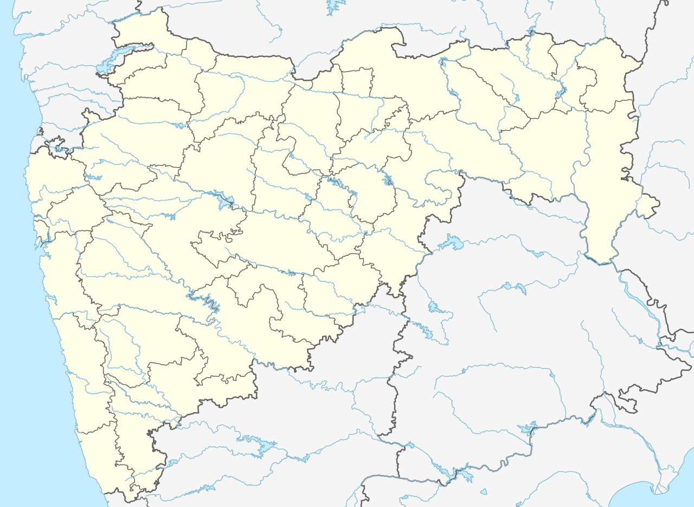

• Evidence of human settlement in Amravati in the 11th century comes from the marble statue of the Jain tirthankara Rishabhanatha. According to an inscription on its base, this statue was installed in 1097. When Govind Maha Prabhu visited Amravati in the 13th century, the region surrounding Amaravati was ruled by the Hindu King of Devagiree (Yadav). Famine (drought) struck Amravati in the fourteenth century, and residents fled to Gujarat and Malwa. After several years, the locals were brought back to Amravati, where the population was sparse. Mager Aurangpura, now known as "Sabanpura", was given to Jamia Masjid by Aurangzeb in the sixteenth century. This demonstrates that Muslims and Hindus coexist in this area. When Amravati became Bhosle ki Amravati in 1722, Chhatrapati Shahu Maharaj gave Amrāvati and Badnera to Shri Ranoji Bhosle. The city was reconstructed and prospered by Ranoji Bhosle after the treaty of Devgaon and Anjangaon Surji and victory over Gavilgad (Fort of Chikhaldara). The Amravati residents still refer to the location where the British general Colonel Wellesley camped as a camp. After the 18th century, the city of Amravati was founded. Amravati was governed by the Nizam and Bosale Union states. Although the revenue officer was appointed, the defense system suffered. British forces took control of Gavilgad Fort on 15 December 1803. According to the Deogaon pact, Nizam received the Warhād as a sign of friendship. Pindāri invaded Amravati city around 1805.[7] In 1983, Amravati became Vidarbha's second Municipal corporation.[8] Located about 663 (412 mi) kilometers east of the state capital Mumbai and 152 (94 mi) kilometers west of Nagpur, Amravati is the second largest city of the Vidarbha region after Nagpur.
• महाराष्ट्रातल्या विदर्भामधे असलेला अमरावती हा जिल्हा अतिशय विस्तीर्ण पसरलेला असुन याला ’अंबानगरी’ म्हणुन देखील ओळख आहे. पुराण काळापासुनचा इतिहास या जिल्हयाला आहे भगवान श्रीकृष्णाने रूक्मीणीला याच नगरीतुन पळवुन नेउन तिच्यासोबत विवाह केल्याचे सांगितले जाते.
Not to be confused with the capital of Andhra Pradesh, Amaravati.
This article is about the municipality in Maharashtra, India. For its namesake district, see Amravati district.
For other uses, see Amaravati (disambiguation).
Amravati
City
